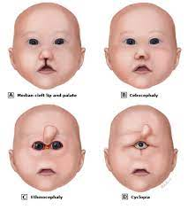

Genetica umană
Cebocefalia
Cebocefalia este o malformație congenitală a capului și a feței care dă un aspect comparat cu cel al capului de maimuță în care nasul este absent sau rudimentar, de multe ori redus la o singură nară, fosele nazale sunt înguste, iar cele două orbite sunt apropiate considerabil.
Cebocefalia face parte din spectrul malformativ al holoprozencefaliei care mai cuprinde ciclopia, etmocefalia și agenezia incisivilor centrali. Cebocefalia se asociază cu anomalii importante de dezvoltare ale sistemului nervos central de tipul holoprozencefalie alobară sau semilobară și poate fi determinată de cauze genetice (anomalii cromozomale, mutații punctiforme) sau de factori teratogenici.